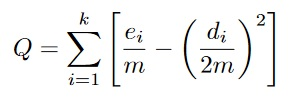
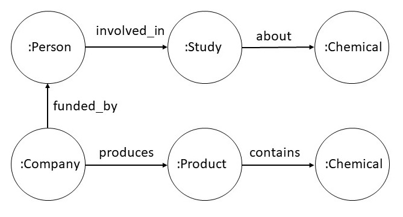

1. Introduction
Once we have created the knowledge graph, we are interested in
retrieving information, and using that information to make new
conclusions. We have already introduced query languages using which we
can perform retrieval operations on the graph. In this chapter, we
will focus on inference algorithms, that go beyond retrievals, i.e.,
conclude new facts from the knowledge graph that are not explicitly
present in it. Inference algorithms can be invoked through the
declarative query interface.
We will consider two broad classes of inference algorithms: graph
algorithms, and ontology-based algorithms. The graph algorithms are
applicable to any graph-structured data, and support operations such
as finding minimum paths between nodes in a graph, identifying salient
nodes in a graph, etc. The ontology-based algorithms operate on the
structure of the graph but take its semantics into account, for
example, traversing specific paths, or concluding new connections
based on background domain knowledge. In this chapter, we will
consider both classes of these algorithms.
In principle, we could invoke graph algorithms, and the
ontology-based inference through a declarative query interface of
the sorts we have previously considered. Ontology-based inference
may leverage graph-based algorithms. For example, checking if an
object A is an instance of a class B, could be done by
checking whether a path exists in the class graph between C and B,
where C is the immediate type of A.
2. Graph-based Inference Algorithms
We will consider three broad classes of graph algorithms: path
finding, centrality detection, and community detection. Path finding
involves finding a path between two
or more nodes in a graph that satisfies certain properties. Centrality
detection is about understanding which nodes are important in a graph.
Different methods used to define the meaning of importance lead to
many variations in the centrality detection algorithms. Finally, community
detection is about identifying a group of nodes in a graph that
satisfies some criteria of being in a community. Community detection
is useful for studying emergent behaviors in graphs that may otherwise
not be noticed.
We will consider each of these categories of graph algorithms in
more detail. For each category, we will present an overview,
discuss different ways it is useful, and consider some sample
algorithms.
2.1 Path Finding Algorithms
There are several variations of the problem of finding paths in a
graph: finding the shortest path between any given two nodes, or
finding the shortest paths between all pairs of nodes, finding a
minimum spanning tree, etc. The shortest path in a graph is a path
between two nodes in a graph such that the sum of the weights of the
edges is minimized. If there is no weight associated with an edge, it
is assumed to be 1. The shortest path between any given two nodes can
be used in planning an optimal route in a traffic navigation system. A
minimum spanning tree calculates the least cost for visiting all the
nodes in a set of nodes, and can be useful in problems such as trip
planning.
As an example of a specific shortest path algorithm, we will
consider the A* algorithm which is a generalization of the classical
Dijkastra's algorithm. A* algorithm is also widely used as a search
algorithm for solving AI Planning problems.
The A* algorithm operates by maintaining a tree of paths
originating at the start node and extending those paths one edge at a
time until its termination criterion is satisfied. At each step, it
determines which of the paths to extend based on the cost
of the path until now and the estimate of the cost required to extend
the path all the way to the goal. If n is the next node to
visit, g(n) the cost until now, and h(n) the estimate of
the cost required to extend the path all the way to the goal, then it
choose the node that minimizes f(n),
where f(n)=g(n)+h(n).
We must choose an admissible heuristic such that it never
over-estimates the cost of arriving at the goal. In one possible
variation, known as the best first search, the heuristic chooses the
path with the least overall cost until now, i.e., it
sets h(n)=0. There exists an extensive literature on the
different heuristics that can be used in the A* search.
2.2 Centrality Detection Algorithms
The centrality detection algorithms are used to better understand the
roles played by different nodes in the overall graph. This analysis can help
us understand the most important nodes in a graph, the dynamics of a
group and possible bridges between groups.
There are several variations of the centrality detection algorithm:
degree centrality, closeness centrality, between-ness centrality, and
page rank. Degree centrality simply measures the number of incoming
and/or outgoing edges. A node with a very high outgoing degree in a
supply chain network suggests a supplier monopoly. A closeness
centrality identifies nodes that have shortest paths to all other
nodes. Such information can be useful in identifying the location of a
new service so that it is most accessible to the widest range of
customers. Between-ness centrality identifies a node based on the number of
shortest paths between nodes that pass through it. Between-ness
centrality is a measure of the sphere of influence exercised by the
nodes in the network. Finally, the PageRank algorithm measures the
importance of a node based on other nodes it is recursively connected
to.
For our discussion here, we will consider the PageRank algorithm in
more detail. The Page rank was originally developed for ranking
pages for WWW search. It is able to measure the transitive
influence on a node. For example, a node connected to a few very
important nodes could be more important than the node connected to a
large number of unimportant nodes. We can define the PageRank of a
node as follows.
PR(u) = (1-d) + d * (PR(T1)/C(T1) + ... + PR(Tn)/C(Tn))
In the above formula, we assume that the node u has
incoming edges from nodes T1,...,Tn. We use d as a
damping factor which is usually set at 0.85. C(T1),...,C(Tn) is
the number of outgoing edges of nodes T1,...,Tn. The algorithm
operates iteratively by first setting the PageRank for all the nodes to
the same value, and then iteratively improving it for a fixed number of
iterations, or until the values converge.
Beyond its original use in ranking search results for WWW queries,
the PageRank has found many other interesting uses. For example, it
is used on social media sites to recommend who should a particular
user follow. It has also been used in fraud analysis to identify
highly unusual activity associated with nodes in a graph.
2.3 Community Detection Algorithms
The general principle underlying the community detection algorithms is
that the nodes in a community have more relationships within the
community than to nodes outside the community. Sometimes, the
community analysis can be the first step in analyzing a graph so that
a more in-depth analysis could be undertaken for nodes within the
community.
There are several flavors of community detection algorithms:
connected components, strongly connected components, label propagation
and fast unfolding (also known as the Louvain algorithm). The first
two of these algorithms, connected components, and strongly connected
components are frequently used in the initial analysis of a
graph. Connected components algorithm and strongly connected
components algorithm are standard techniques of graph theory. A
connected component is a set of nodes such that there is a path
between any two nodes in the underlying undirected graph. A strongly
connected component is a set of nodes such that for any given nodes A
and B in the set, there is a directed path from node A to node B, and
path from node B to node A. Both label propagation and fast unfolding
are bottom up algorithms for identifying communities in large
graphs. We consider both of these algorithms in more detail.
Label propagation begins by assigning each node in the graph to a
different community. We then arrange the nodes in a random order to
update their community as follows. We examine the nodes in the assigned order,
and for each node, we examine its neighbors, and set its community to
the community shared by a majority of its neighbors. The ties are
broken in a unform random manner. The algorithm terminates when each
node is assigned to a community that is shared by a majority of its
neighbors.
In the fast unfolding algorithm, there are two phases. We
initialize each node to be in a separate community. In the first
phase, we examine each node and each of its neighbors and evaluate
if there would be any overall gain in modularity in placing this
node in the same community as a neighbor. A suitable measure to
calculate modularity is defined. If there will be no gain, the node
is left in its original community. In the second phase of the
algorithm, we create a new network in which there is a node
corresponding to each community from Phase 1, and an edge between
the two nodes if there was an edge between some nodes in their
corresponding phase 1 communities. Links between the nodes of the
same community in phase 1 lead to self-loops for the node
corresponding to their community in Phase 2. Once Phase 2 is
completed, the algorithm repeats by applying phase 1 to the
resulting graph.
One example of a modularity function used in the above algorithm is
shown below.

In the above formula, we calculate the overall modularity
score Q of a network that has been divided into k
communities where ei and di are
respectively the number of nodes, and total degree of nodes in
community i, and m is the total number of edges in the
network.
Both label propagation and fast unfolding algorithms reveal
emergent and potentially unanticipated communities. Different
executions may also lead to identification of different
communities.
3. Ontology-based Inference Algorithms
Ontology-based inference distinguishes a knowledge graph system
from a general graph-based system. We will categorize the
ontology-based inference into two categories: taxonomic inference and
rule-based inference. Taxonomic inference primarily relies on the
hierarchy of classes and instances and inheritance of values across
the hierarchy. Rule-based inference can involve general logical
rules. We can access ontological inference through a declarative
query interface, and thus, it can be used as a specialized
reasoning service for a certain class of queries.
3.1 Taxonomic Reasoning
Taxonomic reasoning is applicable in situations where it is useful to
organize knowledge into classes. Classes are nothing but unary
relations. We will consider the concepts of class membership, class
specialization, disjoint classes, value restriction, inheritance and
various inferences that can be drawn using them.
Both property graph and RDF data models support classes. For
property graphs, the node types are equivalent to classes. For RDF,
there is an extension called RDF schema that supports the definition
of classes. In more advanced extensions of RDF such as Web Ontology
Language and Semantic Web Rule Language, a full-fledged support is
available for defining classes and rules.
To discuss taxonomic reasoning, we have chosen to abstract away
from property graph and RDF data models. We will introduce the basic
concepts of taxonomies such as class membership, disjointness,
constraints and inheritance using Datalog as a specification language.
3.1.1 Class Membership
Suppose we wish to model data about kinship. We can define the
unary relations of male and female as classes, that
have members art, bob, bea, coe,
etc. The member of a class is referred to as an instance of that
class. For example, art is an instance of the
class male.
For every unary predicate that we also wish to refer to as a class, we
introduce an object constant with the same name as the name of the
relation constant as follows.
Thus, male is both a relation constant, and an object
constant. This is an example use of metaknowledge, and is
also sometimes known as punning.
To represent that art is an instance of the
class male, we introduce a relation
called instance_of and use it as shown below.
| instance_of(art,male) | instance_of(bea,female) |
| instance_of(bob,male) | instance_of(coe,female) |
| instance_of(cal,male) | instance_of(cory,female) |
| instance_of(cam,male) |
3.1.2 Class Specialization
Classes can be organized into a hierarchy. For example, we can introduce a class person. Both
male and female are then subclasses
of person.
| subclass_of(male,person) | subclass_of(female,person) |
The subclass_of relationship is transitive, ie, if A is a subclass of B, and
B is a subclass of C, then A is a subclass
of C. For example, if mother is a subclass
of female, then mother is also a subclass
of person
|
subclass_of(A,C) :- subclass_of(A,B) & subclass_of(B,C)
|
The subclass_of and instance_of relationships
are related in that if A is a subclass of B, then
all instances of A are also the instances of B. In
our example, all instances of male are also all the instances
of person
|
subclass_of(I,B) :- subclass_of(A,B) & instance_of(I,A)
|
A class hierarchy must not contain cycles, because that would imply
that a class is a subclass of itself, which is semantically incorrect.
3.1.3 Class Disjointness
We say that a class A is disjoint from another
class B if no instance of one can be an instance of another.
We can declare two classes to be disjoint from each other or a set of
classes to be a partition such that each class in the set is pairwise
disjoint from every other class. In our kinship example, the
classes male and female are disjoint from each
other.
| ~instance_of(I,B) :- disjoint(A,B) & instance_of(I,A) |
| ~instance_of(I,A) :- disjoint(A,B) & instance_of(I,B) |
| disjoint(A1,A2) :- partition(A1,...,An) |
| disjoint(A2,A3) :- partition(A1,...,An) |
| disjoint(An-1,An) :- partition(A1,...,An) |
3.1.4 Class Definition
Classes are defined using necessary and sufficient relation values. For example,
age is a necessary relation value for a person. If
we were to define the class of a brown-haired person, it is necessary
and sufficient for a person to have brown hair to be an instance of
this class.
| instance_of(X,brown_haired_person) :-
instance_of(X,person) & has_hair_color(X,brown)
|
The classes that have only necessary relation values are known
as primitive classes and the classes for which we know both
necessary and sufficient relation values are known as defined
classes. The sufficient definition of a class
has instance_of literal in its head.
3.1.5 Value Restriction
We can restrict the arguments of a relation to be instances of
specific classes. In the kinship example, we can restrict
the parent relationship so that its arguments are always
instances of the class person. Thus, if the reasoner is ever
asked to prove parent(table,chair), it can conclude that it
is not true simply by noticing that neither table
nor chair is an instance of person. The restriction
on the first argument of a relation is usually referred as
a domain restriction and the restriction on the second
argument of a relation is referred to as a range restriction. Similar
restrictions can be defined for higher arity relationships.
|
illegal :- domain(parent,person) & parent(X,Y) & ~instance_of(X,person)
|
|
illegal :- range(parent,person) & parent(X,Y) & ~instance_of(Y,person)
|
3.1.6 Cardinality and Number Consraints
We can further restrict the values of relations by specifying
cardinality and number constraints. A cardinality constraint
restricts the number of values of a relation, and the numeric
constraint specifies the range of numeric values that a relation may
take. For example, we may state that a person has exactly two
parents, and that the age of a person is between 0 and 100 years.
>
>
|
illegal :- instance_of(X,person) & ~countofall(P,parent(P,X),2)
| |
illegal :- instance_of(X,person) & age(X,Y) & min(0,Y,Y)
| |
illegal :- instance_of(X,person) & age(X,Y)& min(100,Y,100)
|
3.1.6 Inheritance
The relation values of a class are said to inherit to its
instances. For example, if we assert that art is an instance
of brown_haired_person, we can conclude
that has_hair_color(art,brown). In general, an object can be
an instance of multiple classes. In case of multiple inheritance, the
values inherited from different superclasses can conflict and cause
constraint violation. For example, if art is an instance of
the class brown_haired_person, and a
class bald_person with a constraint that the person has no
hair, we will have constraint violation. In case of constraint
violation, either the value causing the violation must be rejected, or
techniques for para-consistent reasoning must be used to manage such
inconsistency.
3.1.7 Reasoning with Classes
There are four broad classes of inference that are interesting with classes.
- Given two classes A and B, whether A
is a subclass of B?
- Given a class A and an instance I, whether I
is an instance of I?
- Given a ground relation atom determine whether it is true or false.
- Given a relation atom, determine different values of variables for which it is true.
The first two inferences are equivalent to computing the views
on subclass_of and instance_of relations. They
can also be implemented as path finding algorithms on the graph
defined by the classes and their instances. The last two inferences
are equivalent to the view on the relation atom of interest.
3.2 Rule-based Reasoning
It is not possible to draw a strict line between rule-based reasoning and
taxonomic reasoning. Even though we used Datalog as a specification language
for taxonomic reasoning, but it is possible to implement many of the desired
inferences in a rule engine. In this section, we will consider
an example of rule-based reasoning that leverages an advanced form of rules known
as existential rules. We will begin with an example knowledge graph that requires
such reasoning, and then we will consider rule-based reasoning algorithms to perform
the required reasoning.
3.2.1 Example Scenario Requiring Rule-based Reasoning
Consider a property graph with the schema shown below. Companies
produce products that contain chemicals. People are involved in studies
about chemicals, and they can be funded by companies.

Given the above property graph, we are interested in determining if a person
might have a conflict of interest in being involved in a study. We can define the
conflict relationship using the following Datalog rule.
|
coi(X,Y,Z) :-
involved_in(X,Y) & about(Y,P) & funded_by(X,Z) & has_interest(Y,P)
|
|
has_interest(X,Z) :- produces(X,Y) & contains(Y,Z)
|
The relation has_interest was not in the property graph
schema introduced above. But, with the help of its definition using a
rule, a rule engine can calculate the conflict of interest
relation coi. In some cases, we may be interested in adding the
computed values of the coi relationship to our knowledge
graph. As coi is a ternary relation, we will need to reify it.
As reification requires adding new objects in the graph, we can
specify it using an existential rule as shown below.
|
∃c conflict_of(c,X) & conflict_reason(c,Y) & conflict_with(c,Z) :-
involved_in(X,Y) & about(Y,P) & funded_by(X,Z) & has_interest(Y,P)
|
In general, existential rules are needed whenever we need to create new objects
in our knowledge graph. Relationship reification is an obvious such situation.
Sometimes, we may need to create new objects to satisfy certain constraints.
For example, consider the constraint: every person must have two parents. For a given
person, the parents may not be known, and if we want our knowledge graph to
remain consistent with this constraint, we must introduce two new objects representing
the parents of a person. As this can lead to infinite number of new objects, it is
typical to set a limit on how the new objects are created.
3.2.2 Approach for Rule-based Reasoning
To support rule-based reasoning on a knowledge graph, one usually interfaces a rule engine
with the data in the knowledge graph. We consider here a few different reasoning strategies
used by the rule engines.
In a bottom up reasoning strategy, also known as Chase, we apply
all the rules against the knowledge graph, and add new facts to it
until we can no longer derive new facts. As noted in the previous
section, we need to put in place aggressive termination strategies
to deal with situations where additional reasoning offers no
additional insight. Once we have computed the Chase, the reasoning
can proceed using traditional query processing methods.
In top down query processing, we begin from the query to be
answered, and apply the rules on as needed basis. A top down
strategy requires a tighter interaction between the query engine of
the knowledge graph with the rule evaluation. This approach,
however, can use lot less space as compared to the bottom up
reasoning strategy.
Highly efficient and scalable rule engines use query optimization
and rewriting techniques. They also rely on caching strategies to
achieve efficient execution.
4. Summary
In this chapter, we considered different inference algorithms for
knowledge graphs. Graph algorithms such as path finding, community
detection, etc. are supported by most practical graph engines. Graph
engines often provide limited support for ontology and rule-based
reasoning. Knowledge graph engines are now starting to become
available that support both general-purpsose graph algorithms as well
as ontology and rule-based reasoning.
Exercises
Exercise 6.1.
For the tiled puzzle problem shown below, we can define two different admissible heuristics: Hamming distance and Manhanttan distance. The Hamming distance is the total number of misplaced tiles. The Manhattan distance is the sum of the distance of each tile from its desired position. Answer the questions below assuming that in the goal state, the bottom right corner will be empty.
|
(a) |
What is the Manhattan distance for the configuration shown above? |
|
(b) |
What is the Hamming distance for the configuration shown above? |
|
(c) |
If your algorithm was using the Manhattan distance as a heuristic, what would be its next move? |
|
(d) |
If your algorithm was using the Hamming distance as a heuristic, what would be its next move? |
Exercise 6.2.
Consider a graph with three nodes and the edges as shown in the
table below for which we will go through first few steps of
calculating the Page rank. We assume that the damping factor is set
to 1.0. We initialize the process by setting the Page rank of each
node to 0.33. In the first iteration, as A has only one incoming
edge from B with a score of 0.33, and B has only one outgoing edge,
the score of A remains 0.33. B has two incoming edges --- the first
incoming edge from A (with a score of 0.33 which will be divided
into 0.17 for each of the outgoing edge from A), and the second
incoming edge from C (with a weight of 0.33 as C has only one
outgoing edge). Therefore, B now has a Page rank of 0.5. C has one
incoming edge from A (with a score of 0.33 which will be divided
into 0.17 for each of the outgoing edge from A), and therefore, the
Page rank of C is 0.17. Follow this process to calculate their ranks
at the end of iteration 2.

|
(a) |
What is the Page rank of A at the end of second iteration? |
|
(b) |
What is the Page rank of B at the end of second iteration? |
|
(c) |
What is the Page rank of C at the end of second iteration? |
Exercise 6.3.
For the graph shown below, calculate the overall modularity score for
different choices of communities.

|
(a) |
What is the overall modularity score if all the nodes were in the same community? |
|
(b) |
What is the overall modularity score if we have two
communities as follows. The first community contains A, B and
D. The second community contains the rest of the nodes. |
|
(c) |
What is the overall modularity score if we have two
communities as follows. The first community contains A, B, C, D and
E. The second community contains the rest of the nodes. |
|
(d) |
What is the overall modularity score if we have two
communities as follows. The first community contains C, E, G and
H. The second community contains the rest of the nodes. |
Exercise 6.4.
Considering the statements below, state whether each
of the following sentence is true or false.
| subclass_of(B,A) | subclass_of(C,A) | subclass_of(D,B) |
| subclass_of(E,B) | subclass_of(F,C) | subclass_of(G,C) |
| subclass_of(H,C) | disjoint(B,C) | partition(F,G,H) |
|
(a) |
disjoint(D,E) |
|
(b) |
disjoint(B,G) |
|
(c) |
disjoint(F,G) |
|
(d) |
disjoint(E,C) |
|
(e) |
disjoint(A,F) |
Exercise 6.5.
Consider the following statements.
- George is a Marine.
- George is a chaplain.
- Marine is a beer drinker.
- A chaplain is not a beer drinker.
- A beer drinker is overweight.
- A Marine is not overweight.
|
(a) |
Which statement must you disallow to maintain consistency? |
|
(b) |
What are the alternative set of statements that might be true? |
|
(c) |
What conclusions you can always draw regardless of which statement you disallow? |
|
(d) |
What conclusion you can draw only some of the times? |
|